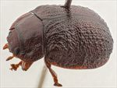
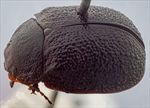
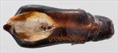
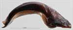
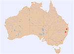

Click on images to enlarge
![Male, Bald Mtn area, Emu Vale, S.E. Queensland [QM]](assets/image/Ta75/Ta75_AGM-094_SM.jpg){kind=link}

Male, Bald Mtn area, Emu Vale, S.E. Queensland [QM]
{kind=link}

Male, Glencoe, N.E. New South Wales
{kind=link}

Aedeagus, dorsal view (Glencoe, N.E. New South Wales)
{kind=link}

Aedeagus, lateral view (Glencoe, N.E. New South Wales)
{kind=link}

Distribution
Name
Trachymela sp. Ta75
Reference specimen
1999-0537a, Glencoe, NE New South Wales.
Adult Description
Length: ♂ 8.7–9.3 mm (n=2), ♀ 8.1 mm (n=1?).
[Description based only on the two male specimens, as the status of the female is uncertain.]
Colouration:
- Head: mid-brown to dark brown, some black present along anterior edge of fronto-clypeal suture and around area between lower eye and antennal insertions, mandibles with black tips and base; antennomeres 1–2 light brown, 3–6 grading from light brown to dark brown, 7–11 very dark brown with distal extremes slightly paler.
- Pronotum: rather variable, mid- to very dark brown, concolorous with or darker than head, sometimes with anterior margin broadly black, or with lateral marginal area paler, foveal elevation black, lateral edge black.
- Scutellum: dark brown, concolorous with adjacent region of pronotum.
- Elytra: mid- to very dark brown, concolorous with disc of pronotum, with thickened raised interstices mostly concolorous with or darker than substrate, but very small, slightly less elevated lighter-coloured ones may be scattered about and marginal area also slightly lighter in colour; verrucae either concolorous with darker areas or black; humeral callus black.
- Venter & Legs: head black, thoracic ventrites black or almost so, legs and abdominal ventrites dark reddish-brown, epipleurae black or dark brown.
- Cuticular Wax: a sparse, grey sprinkle.
Morphology:
- General: body quite evenly rounded but relatively flat, highest point at or behind middle of elytral margin, ventrites project slightly below elytral epipleurae.
- Head: punctures quite large (pd ≈ 2×ef) and quite evenly and moderately densely distributed, a puncture-free thin longitudinal patch in centre behind level of eyes. Antennae moderately long (AL/BL: ♂ 46–47%, ♀ unknown), filiform.
- Pronotum: evenly curved transversely over discal region, lateral margins very slightly explanate, with foveal depression shallow with a slight rounded elevation near its centre; puncturation very clearly impressed, evenly to slightly unevenly and densely distributed in discal area with a mix of puncture sizes usually present, the larger fractionally larger than those on head, becoming somewhat coarser at lateral margins; front margins join much thinner lateral margins in a relatively blunt, right angle, with lateral margin straight for a short distance, so that pronotum reaches its maximum width at or just before mid-point of lateral margin; postero-lateral angle quite sharp.
- Scutellum: surface smooth, unpunctured or very lightly punctured near anterior edge with punctures smaller than those on adjacent area of pronotum.
- Elytra: surface slightly flattened between scutellum and highest point; punctures relatively evenly distributed, distinct only in a strip along suture close to elytral summit, elsewhere obscured by network of thickened interstices, with much smaller punctures scattered very sparingly on interstices; small round verrucae, concolorous with or fractionally darker than substrate, some with a small central puncture, frequently aligned in approximately evenly-spaced longitudinal series; a few small transverse ridges present between interstices just posterior to post-basal impressions; suture not noticeably elevated except very close to apex; posterior half of marginal area slightly to moderately concave; surface discontinuous under humeral callus; lateral margin markedly sinuate. Vertical extension of epipleurae slight (HCE/PW = 0.27–0.29).
- Venter: prosternal process variable, narrowest anteriorly, closed anteriorly; short setae present at rear of prosternal process and on mesoventrite; 2–3 long setae on anterior trochanters, a short row of 3–5 on median and posterior trochanters; front edge of metaventrite bevelled, truncate; inner edge of posterior of epipleurae lacking setae.
Male Genitalia (Aedeagus):
- Dimensions: short (LPE = 27–28% BL).
- Dorsal view: lateral margins of shaft slightly sinuous in central section, thinning fractionally from base before widening gradually to its widest point about 25% of distance from apex, from there briefly straight then converging towards apex in a smooth but concave arc; dorsal surface smoothly curved with dorso-median channel absent posterior to ostium, dorso-lateral channels well defined but short; tip protruding as a pointed triangle; ostium large and oval.
- Lateral view: shaft moderately curved for all of central section except near apex where curvature reverses to form a prominent, deflexed tip.
Immature Stages
Unknown.
Similar species
- Ta20, Ta54, & Ta75: These three species tend to be very similar in general appearance and can be difficult to separate. Detailed comparisons are provided under Ta20 and Ta54.
Notes
- Taxonomy: Ta75 has an unusually shaped aedeagus that is very similar to that of Ta63, though otherwise these species are very different.
- Distribution & Abundance: Only definitely known from two males, both from high-altitude locations in northern New South Wales and southern Queensland.
- Host Associations: Both the male and the female from the New South Wales location were collected from a smooth-barked eucalypt, probably Eucalyptus pauciflora.
- Morphological Variation: Pronotal punctures on the Glencoe specimen are noticeably denser, with the punctures slightly larger and more strongly impressed than on the SE Queensland specimen. The female obtained from the same tree as one of the males is quite likely a different species, as it lacks the multiple setae on the trochanters that both males possess and is comparatively small (though on other characters they are very similar). In field notes, it was recorded that the male was covered with "just a sprinkle of greyish wax" while the female "is covered somewhat more heavily in wax of a light-brown colour".
Copyright © 2026. All rights reserved.